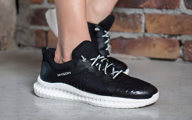
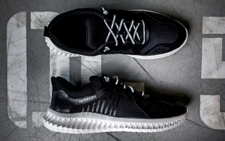
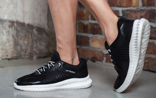

<section class="info__section">
    <div class="container">
        <div class="info__section-wrapper">
            
            <h2 class="info__section-title">
                Кросівки FlyTech 7 
            </h2>
            <p class="info__section-text">
                Міські скандинавські кросівки, виготовлені за евро стандартами
            </p>
            <div class="info__items">
                <div class="info__item info__item-1">
                    <h3 class="info__item-title">
                        Комфорт та підтримка
                    </h3>
                    
                    <p class="info__item-text">
                        FlyTech 7 забезпечують неймовірний комфорт у кожному кроці завдяки інноваційній технології, яка гарантує правильний розподіл навантаження та підтримку п'яти.
                    </p>
                </div>
                <div class="info__item info__item-2">
                    <h3 class="info__item-title">
                        Надійність та стійкість
                    </h3>
                    
                    <p class="info__item-text">
                        Міцна гумова підошва з додатковими зчіпними елементами забезпечує надійне зчеплення на будь-якій поверхні. 
                    </p>
                </div>
                <div class="info__item info__item-3">
                    <h3 class="info__item-title">
                        Легкість та дихаючість
                    </h3>
                    
                    <p class="info__item-text">
                        Завдяки легкому і дихаючому верху з сітчастого матеріалу кросівки FlyTech 7 забезпечують ідеальний мікроклімат для ноги.
                    </p>
                </div>
            </div>
        </div>
    </div>
</section>